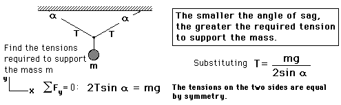

Force Equilibrium ExampleForce equilibrium problems like this can be analyzed by drawing a free body diagram of the point of attachment of the mass m, since it must be at equilibrium. The tensions should be resolved into horizontal and vertical components to apply the force equilibrium condition. |
Index Force equilibrium examples |
| HyperPhysics***** Mechanics | Go Back |